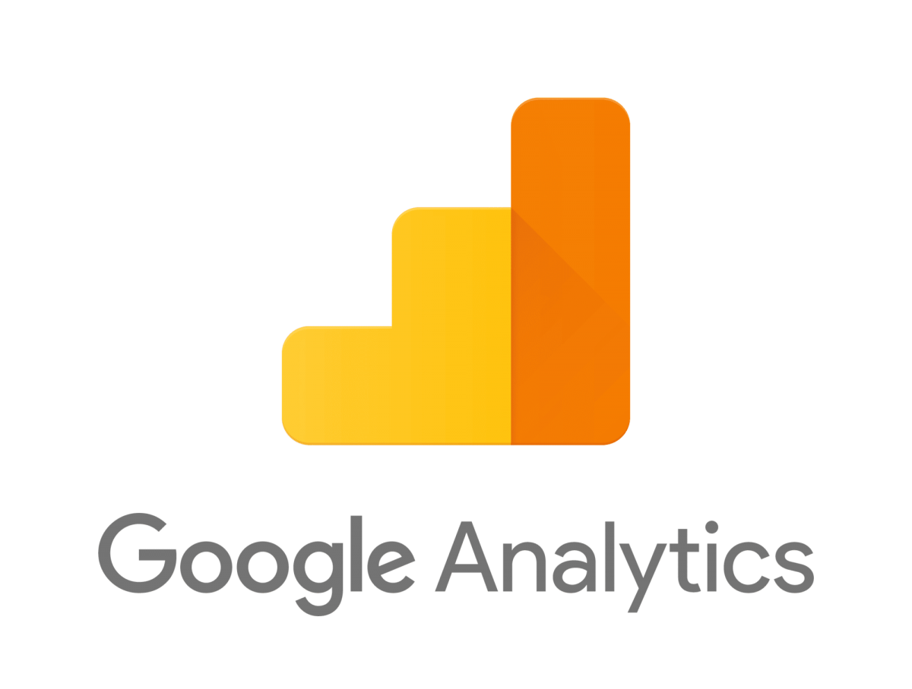

Barba.js
Une nouvelle version vient de sortir avec une nouvelle logique qui
vas avec de se fait n’ayant pas beaucoup de site l’utilisant et
d’exemple sur le net , la courbe d’apprentissage et plutôt longue,
mais reste un outils très intéressant et pertinent à l’avenir , la
première version ayant eu énormément de succès.
La documentation
Highway.js
HighwayJs est l’outils utilisé et conçu par l’agence Dogstudio ,
il propose les mêmes chose que BarbaJS mais avec une logique
différente. C'est se que j'utilise sur le mini site sur lequel
vous êtes.
La documentation
Swup.js
Swup Js est un outil plus simple que les deux précédent et plus
simple à prendre en main , un excellent tutoriel fait par
Graphikart et une bonne documentation est la pour nous aider.
Malheureusement peu d’exemples en production.
Swup se veut progressif, initialement l'outil est conçu pour
effectuer des animations fait en css, mais des "plugins" sont
présents pour le JS, mais aussi pour combler les différents besoin
. La conception des plugins est ouvert à tout le monde.
Un plugin est déja existant pour faciliter le support de Google anlytics.
La documentation
ModularLoad
Encore plus léger que les solutions précédentes mais proposant
moins d’options juste le minimum, ModularLoad est l’outils
utilisées par l’agence Locomotive. La prise en main est super
facile , le seul problème c’est que le contenue n’est pas
prefetcher comme le font les outils précédent. (peut être modifier
la solution afin de pallier ce problème)
j’ai fait un test avec ModularLoad disponible à cette adresse :
https://photo-story-by-dona.netlify.com/
La documentation
Framework js (React, Vue, Svelte etc ...)
Dans le cas des frameworks JS, des outils sont déja présent
nativement au sein de ses frameworks pour appliquer des
transitions ou des évènements particulières.
Suivie (Google Analytics & Google Tag Manager)

Pour le suivie sur google analytics les informations sur la page
actuel doivent être systematiquement renvoyer en JS. Pour le
google tag manager il faut activer l'"History Change". Les
techniques peuvent légèrement différer suivant la librairie
utilisée.
Plus d'information ici
Implémentation

Les différentes solutions utilise principalment les attributs
"data", sauf pour Swup qui aura besoin d'identifier le conteneur
de se qui change via l'id "Swup". En règle générale ont vas
appliquer les attributs data sur un wrapper et un conteneur qui
change, ensuite des data attibuts peuvent être rajouter sur les
liens pour passer des paramètres différentes suivant la cible du
lien.